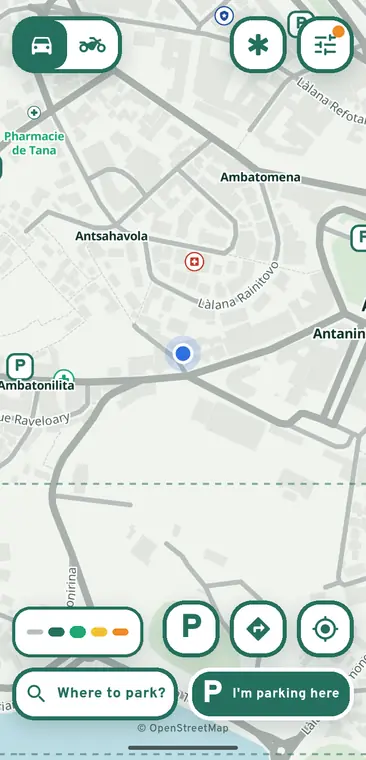
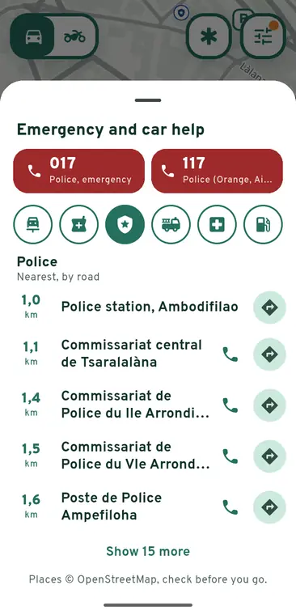
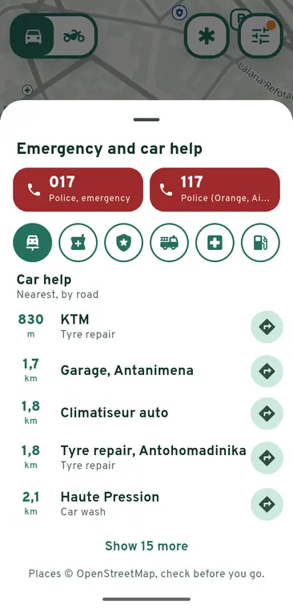
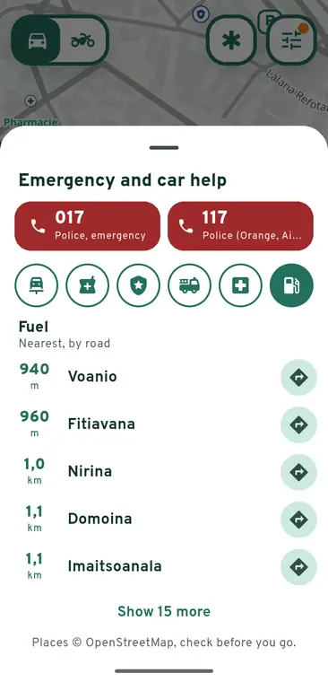
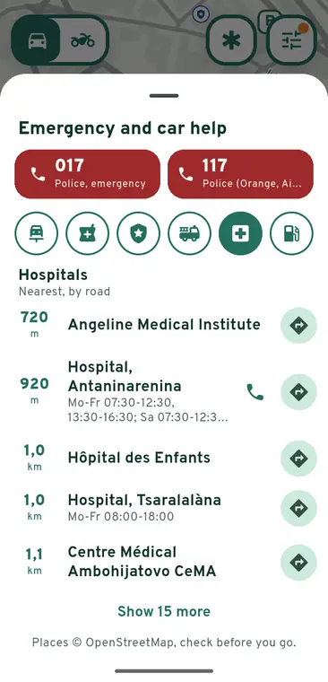
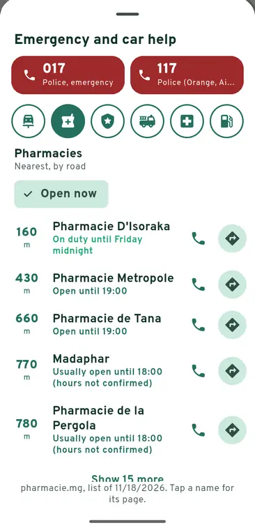

0.2.6
Forbidden turns respected in routes; your car recognized by its radio.
 F-iara
F-iara
Routes, parking, emergencies and pharmacies on duty, by car or motorbike. Free, no account, no ads.






Old or entry-level phone? Get this version. After that the app updates itself.
F-iara shows car parks, tow trucks and services to Tana's drivers at the very moment they need them.
First in “Where to park?”, with your prices and opening hours. The app guides drivers to your entrance.
First in “Emergency and breakdown”: your number one tap away, right when a car breaks down or a tyre goes flat.
“F-iara with your brand” in the app and on this site. One sponsor at a time.
Always marked “Partner” in the app. The first three partners get their first month free.
Map and guidance live on the phone. A jam ahead? F-iara offers another way.
Park and get out: F-iara remembers the spot by itself and walks you back to it.
245 car parks, the nearest in your driving direction, within 1 km by road.
Nearest police, gendarmerie, hospitals and garages by road. One tap dials the number.
The list changes every week; F-iara updates itself. At night only those on duty remain.
F-iara drivers share their speed street by street, anonymously. Tana lights up road by road.
No account. Your location stays on your phone; if you help with traffic, only a speed per street is sent, never your journey. You choose whether to help, and you can stop at any time.